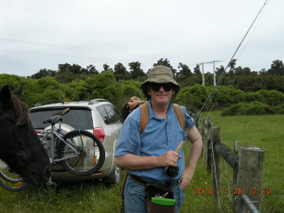
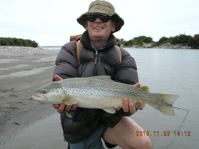

釣行日誌 ＮＺ編 「翡翠、黄金、そして銀塊」
みたび南へ向かう
2010/11/28(SUN)-1
みたび南へ向かう朝が来た。今回の釣行では、西海岸の南のはずれにある湖の畔に建っているロッジを拠点に、降海型のブラウントラウトを探してあちこちの川、湖を狙ってみることとなった。朝食後、ブリントさんとガレージからマウンテンバイクを２台出してきて、車に載せる準備をする。トヨタ RAV-4 の後部に取り付けたバイクラックに自転車をベルトで固定し、干渉するペダルは一時的に取り外した。今回は、車の通れない小径をマウンテンバイクで走破して、ブリントさんお勧めのポイントを攻める予定なのだ。
またしてもステートハイウェイ６号線を南西に下り、小さな町をいくつか過ぎ、ある川の橋を渡ったところで車は脇道に入り、ちょっとした空き地に停まった。ここで２人はブリントさんの奥さんのグレースさんが作ってくれたランチをとり、いそいそと釣り支度をした。今日のブリントさんは、ショーツに半袖シャツ、足元は裸足にサンダルと、いたってカジュアルな服装である。しかし、雨具やダウンジャケットの入った大きなバックパックはいつものように担いでいる。僕も今日はウェーダーを履かずにショーツにタイツ、ネオプレンのソックスにウェーディングシューズという格好である。さあ川へ、と思っていると、どこからか馬が１頭現れて近づいて来た。

羊や牛の放牧は見慣れた風景だが、馬はちょっと珍しい。人懐っこく鼻面を近づけてくる馬をしばらく撫でてから、２人は牧場のゲートを開けて河原へと向かった。
ニュージーランド南島西海岸の、ＳＨ６号線沿いには無数の川があり、タスマン海へと流れ込んでいる。６号線あたりはどこも下流域であり、しばらく歩けば河口に出る。この川も河口が近いので、砂地の茫漠とした渓相である。それでは！ということで２人はラインを伸ばし、思い思いのポイントへストリーマーパターンを振り込んだ。ブリントさんはホワイトベイトフライ、僕はグレイゴーストを結んである。川が大きいので、狙うべきポイントが絞りにくかったが、ブリントさんのキャストを参考に、それらしい場所を探っていった。若干空が曇って来て、薄ら寒くなったので、ブリントさんはダウンジャケットを、僕はレインジャケットを着込んだ。
午後２時を回り、もう海が見えてきたあたり、二股の流れが合流しているポイントで、ブリントさんのロッドが大きく曲がった。ロッドがのされて水面が割れ、銀色の塊が空中に飛び出す。シーランブラウンだ。大きい。鱒は２度、３度とジャンプを繰り返す。
「そんなに大きく無いな。ホワイトベイトのフライに喰ってきたぞ。きっとまだそのへんに他のが居るぞ。」
僕の感覚では大きな鱒だったが、ブリントさんにしてみれば中型クラスらしい。彼は熟練の竿さばきで魚をいなし、砂地の岸辺に寄せてきた。
「ネットですくいましょうか？」
と声を掛け、ブリントさんのバックパックにくくり付けてある大きなランディングネットを取り外し、取り込みの態勢をとる。最後の瞬間にばらさないよう、慎重にランディングすると、銀色に光り丸々と太った見事な降海型ブラウンだった。ファイトには約７分かかっていた。

ブリントさんの目測では、約５ポンドというその鱒は、ホワイトベイトを喰っているのか、胃が大きく膨らんでいた。まだまだこのサイズは釣れるだろうということで、そっとリリースしてやると、しばらく僕の足元で休んで体力が回復するのを待ち、やがて深みへと消えていった。
今日の１尾目の姿を見ることができ、気を良くした２人は河口まで釣り下ったが、その後アタリは無く、この川での釣りはそれまでとなった。車に戻り、さらに南を目指す。
釣行日誌ＮＺ編 目次へ
サイトマップ
ホームへ
お問い合わせ